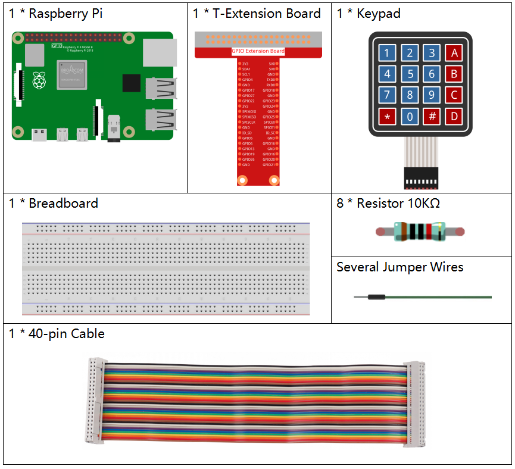

2.1.5 Tastatur¶
Einführung¶
Eine Tastatur ist eine rechteckige Anordnung von Schaltflächen. In diesem Projekt werden wir Eingabezeichen verwenden.
Komponenten¶
Prinzip¶
Tastenfeld
Eine Tastatur ist eine rechteckige Anordnung von 12 oder 16 AUS- (EIN) Tasten. Der Zugriff auf ihre Kontakte erfolgt über einen Header, der zum Anschluss mit einem Flachbandkabel oder zum Einsetzen in eine Leiterplatte geeignet ist. Bei einigen Tastaturen ist jede Taste mit einem separaten Kontakt in der Kopfzeile verbunden, während alle Tasten eine gemeinsame Masse haben.

Häufiger sind die Tasten Matrix kodiert, was bedeutet, dass jede von ihnen ein eindeutiges Leiterpaar in einer Matrix überbrückt. Diese Konfiguration eignet sich zum Abfragen durch einen Mikrocontroller, der so programmiert werden kann, dass er nacheinander einen Ausgangsimpuls an jeden der vier horizontalen Drähte sendet. Während jedes Impulses werden die verbleibenden vier vertikalen Drähte nacheinander überprüft, um festzustellen, welcher, falls vorhanden, ein Signal führt. Pullup- oder Pulldown-Widerstände sollten zu den Eingangsleitungen hinzugefügt werden, um zu verhindern, dass sich die Eingänge des Mikrocontrollers unvorhersehbar verhalten, wenn kein Signal vorhanden ist.
Schematische Darstellung¶


Experimentelle Verfahren¶
Schritt 1: Bauen Sie die Schaltung auf.

Für Benutzer in C-Sprache¶
Schritt 2: Öffnen Sie die Kodedatei.
cd /home/pi/davinci-kit-for-raspberry-pi/c/2.1.5/
Schritt 3: Kompilieren Sie die Kode.
gcc 2.1.5_Keypad.cpp -lwiringPi
Schritt 4: Ausführen.
sudo ./a.out
Nachdem die Kode ausgeführt wurde, werden die Werte der gedrückten Tasten auf der Tastatur (Tastenwert) auf dem Bildschirm gedruckt.
Kode
#include <wiringPi.h>
#include <stdio.h>
#define ROWS 4
#define COLS 4
#define BUTTON_NUM (ROWS * COLS)
unsigned char KEYS[BUTTON_NUM] {
'1','2','3','A',
'4','5','6','B',
'7','8','9','C',
'*','0','#','D'};
unsigned char rowPins[ROWS] = {1, 4, 5, 6};
unsigned char colPins[COLS] = {12, 3, 2, 0};
void keyRead(unsigned char* result);
bool keyCompare(unsigned char* a, unsigned char* b);
void keyCopy(unsigned char* a, unsigned char* b);
void keyPrint(unsigned char* a);
void keyClear(unsigned char* a);
int keyIndexOf(const char value);
void init(void) {
for(int i=0 ; i<4 ; i++) {
pinMode(rowPins[i], OUTPUT);
pinMode(colPins[i], INPUT);
}
}
int main(void){
unsigned char pressed_keys[BUTTON_NUM];
unsigned char last_key_pressed[BUTTON_NUM];
if(wiringPiSetup() == -1){ //when initialize wiring failed,print message to screen
printf("setup wiringPi failed !");
return 1;
}
init();
while(1){
keyRead(pressed_keys);
bool comp = keyCompare(pressed_keys, last_key_pressed);
if (!comp){
keyPrint(pressed_keys);
keyCopy(last_key_pressed, pressed_keys);
}
delay(100);
}
return 0;
}
void keyRead(unsigned char* result){
int index;
int count = 0;
keyClear(result);
for(int i=0 ; i<ROWS ; i++ ){
digitalWrite(rowPins[i], HIGH);
for(int j =0 ; j < COLS ; j++){
index = i * ROWS + j;
if(digitalRead(colPins[j]) == 1){
result[count]=KEYS[index];
count += 1;
}
}
delay(1);
digitalWrite(rowPins[i], LOW);
}
}
bool keyCompare(unsigned char* a, unsigned char* b){
for (int i=0; i<BUTTON_NUM; i++){
if (a[i] != b[i]){
return false;
}
}
return true;
}
void keyCopy(unsigned char* a, unsigned char* b){
for (int i=0; i<BUTTON_NUM; i++){
a[i] = b[i];
}
}
void keyPrint(unsigned char* a){
if (a[0] != 0){
printf("%c",a[0]);
}
for (int i=1; i<BUTTON_NUM; i++){
if (a[i] != 0){
printf(", %c",a[i]);
}
}
printf("\n");
}
void keyClear(unsigned char* a){
for (int i=0; i<BUTTON_NUM; i++){
a[i] = 0;
}
}
int keyIndexOf(const char value){
for (int i=0; i<BUTTON_NUM; i++){
if ((const char)KEYS[i] == value){
return i;
}
}
return -1;
}
Kode Erklärung
unsigned char KEYS[BUTTON_NUM] {
'1','2','3','A',
'4','5','6','B',
'7','8','9','C',
'*','0','#','D'};
unsigned char rowPins[ROWS] = {1, 4, 5, 6};
unsigned char colPins[COLS] = {12, 3, 2, 0};
Deklarieren Sie jede Taste der Matrixtastatur zu den Array- keys[] und definieren Sie die Pins für jede Zeile und Spalte.
while(1){
keyRead(pressed_keys);
bool comp = keyCompare(pressed_keys, last_key_pressed);
if (!comp){
keyPrint(pressed_keys);
keyCopy(last_key_pressed, pressed_keys);
}
delay(100);
}
Dies ist der Teil der Hauptfunktion, der den Tastenwert liest und druckt.
Die Funktion keys[] liest den Status jeder Taste.
Mit KeyCompare() und keyCopy () wird beurteilt, ob sich der Status einer Schaltfläche geändert hat (dh eine Schaltfläche wurde gedrückt oder losgelassen).
keyPrint() druckt den Tastenwert der Taste, deren aktueller Niveau hoch ist (die Taste wird gedrückt).
void keyRead(unsigned char* result){
int index;
int count = 0;
keyClear(result);
for(int i=0 ; i<ROWS ; i++ ){
digitalWrite(rowPins[i], HIGH);
for(int j =0 ; j < COLS ; j++){
index = i * ROWS + j;
if(digitalRead(colPins[j]) == 1){
result[count]=KEYS[index];
count += 1;
}
}
delay(1);
digitalWrite(rowPins[i], LOW);
}
}
Diese Funktion weist jeder Zeile nacheinander eine hohe Ebene zu, und wenn die Taste in der Spalte gedrückt wird, erhält die Spalte, in der sich die Taste befindet, eine hohe Ebene. Nach der zweischichtigen Schleifenbeurteilung generiert die Schlüsselzustandskompilierung ein Array (reasult[]).
Beim Drücken von Taste 3:

RowPin [0] schreibt auf der hohen Ebene und colPin[2] erhält die hohe Ebene. ColPin [0], colPin[1], colPin[3] erhalten den niedrigen Wert.
Dies gibt uns 0,0,1,0. Wenn rowPin[1], rowPi [2] und rowPin[3] auf hoher Ebene geschrieben werden, wird colPin[0] ~ colPin[4] auf niedriger Ebene.
Nach Abschluss der Schleifenbeurteilung wird ein Array generiert:
result[BUTTON_NUM] {
0, 0, 1, 0,
0, 0, 0, 0,
0, 0, 0, 0,
0, 0, 0, 0};
bool keyCompare(unsigned char* a, unsigned char* b){
for (int i=0; i<BUTTON_NUM; i++){
if (a[i] != b[i]){
return false;
}
}
return true;
}
void keyCopy(unsigned char* a, unsigned char* b){
for (int i=0; i<BUTTON_NUM; i++){
a[i] = b[i];
}
}
Diese beiden Funktionen werden verwendet, um zu beurteilen, ob sich der Tastenstatus geändert hat. Wenn Sie beispielsweise Ihre Hand loslassen, wenn Sie ‚3‘ oder ‚2‘ drücken, gibt keyCompare () false zurück.
Mit KeyCopy() wird der aktuelle Schaltflächenwert für ein Array (last_key_pressed[BUTTON_NUM]) nach jedem Vergleich neu geschrieben. So können wir sie beim nächsten Mal vergleichen.
void keyPrint(unsigned char* a){
//printf("{");
if (a[0] != 0){
printf("%c",a[0]);
}
for (int i=1; i<BUTTON_NUM; i++){
if (a[i] != 0){
printf(", %c",a[i]);
}
}
printf("\n");
}
Mit dieser Funktion wird der Wert der aktuell gedrückten Taste gedruckt. Wenn die Taste ‚1‘ gedrückt wird, wird die ‚1‘ gedruckt. Wenn die Taste ‚1‘ gedrückt wird und die Taste ‚3‘ gedrückt wird, wird die ‚1, 3‘ gedruckt.
Für Python-Sprachbenutzer¶
Schritt 2: Öffnen Sie die Kodedatei.
cd /home/pi/davinci-kit-for-raspberry-pi/python/
Schritt 3: Ausführen.
sudo python3 2.1.5_Keypad.py
Nachdem die Kode ausgeführt wurde, werden die Werte der gedrückten Tasten auf der Tastatur (Tastenwert) auf dem Bildschirm gedruckt.
Kode
import RPi.GPIO as GPIO
import time
class Keypad():
def __init__(self, rowsPins, colsPins, keys):
self.rowsPins = rowsPins
self.colsPins = colsPins
self.keys = keys
GPIO.setwarnings(False)
GPIO.setmode(GPIO.BCM)
GPIO.setup(self.rowsPins, GPIO.OUT, initial=GPIO.LOW)
GPIO.setup(self.colsPins, GPIO.IN, pull_up_down=GPIO.PUD_DOWN)
def read(self):
pressed_keys = []
for i, row in enumerate(self.rowsPins):
GPIO.output(row, GPIO.HIGH)
for j, col in enumerate(self.colsPins):
index = i * len(self.colsPins) + j
if (GPIO.input(col) == 1):
pressed_keys.append(self.keys[index])
GPIO.output(row, GPIO.LOW)
return pressed_keys
def setup():
global keypad, last_key_pressed
rowsPins = [18,23,24,25]
colsPins = [10,22,27,17]
keys = ["1","2","3","A",
"4","5","6","B",
"7","8","9","C",
"*","0","#","D"]
keypad = Keypad(rowsPins, colsPins, keys)
last_key_pressed = []
def loop():
global keypad, last_key_pressed
pressed_keys = keypad.read()
if len(pressed_keys) != 0 and last_key_pressed != pressed_keys:
print(pressed_keys)
last_key_pressed = pressed_keys
time.sleep(0.1)
# Define a destroy function for clean up everything after the script finished
def destroy():
# Release resource
GPIO.cleanup()
if __name__ == '__main__': # Program start from here
try:
setup()
while True:
loop()
except KeyboardInterrupt: # When 'Ctrl+C' is pressed, the program destroy() will be executed.
destroy()
Kode Erklärung
def setup():
global keypad, last_key_pressed
rowsPins = [18,23,24,25]
colsPins = [10,22,27,17]
keys = ["1","2","3","A",
"4","5","6","B",
"7","8","9","C",
"*","0","#","D"]
keypad = Keypad(rowsPins, colsPins, keys)
last_key_pressed = []
Deklarieren Sie jede Taste der Matrixtastatur zu den Array- keys[] und definieren Sie die Pins für jede Zeile und Spalte.
def loop():
global keypad, last_key_pressed
pressed_keys = keypad.read()
if len(pressed_keys) != 0 and last_key_pressed != pressed_keys:
print(pressed_keys)
last_key_pressed = pressed_keys
time.sleep(0.1)
Dies ist der Teil der Hauptfunktion, der den Tastenwert liest und druckt.
Die Funktion keys[] liest den Status jeder Taste.
Die Anweisung if len(pressed_keys) != 0 und last_key_pressed != pressed_keys wird zur Beurteilung verwendet
ob eine Taste gedrückt wird und der Status der gedrückten Taste. (Wenn Sie ‚3‘ drücken, während Sie ‚1‘ drücken, ist das Urteil haltbar.)
Druckt den Wert der aktuell gedrückten Taste, wenn die Bedingung haltbar ist.
Die Anweisung last_key_pressed = pressed_keys weist einem Array last_key_pressed den Status jeder Beurteilung zu, um die nächste Runde der bedingten Beurteilung zu erleichtern.
def read(self):
pressed_keys = []
for i, row in enumerate(self.rowsPins):
GPIO.output(row, GPIO.HIGH)
for j, col in enumerate(self.colsPins):
index = i * len(self.colsPins) + j
if (GPIO.input(col) == 1):
pressed_keys.append(self.keys[index])
GPIO.output(row, GPIO.LOW)
return pressed_keys
Diese Funktion weist jeder Zeile nacheinander eine hohe Ebene zu, und wenn die Schaltfläche in der Spalte gedrückt wird, erhält die Spalte, in der sich die Taste befindet, eine hohe Ebene. Nachdem die Zweischichtschleife beurteilt wurde, wird der Wert der Schaltfläche, deren Status 1 ist, im Array press_keys gespeichert.
Wenn Sie die Taste ‚3‘ drücken:
rowPins[0] wird auf hoher Ebene geschrieben, und colPins[2] wird auf hoher Ebene geschrieben.
colPins[0] 、 colPins[1] 、 colPins[3] erhalten einen niedrigen Wert.
Es gibt vier Zustände: 0, 0, 1, 0; und wir schreiben ‚3‘ in press_keys.
Wenn rowPins[1], rowPins[2], rowPins[3] auf eine hohe Ebene geschrieben werden, erhalten colPins[0] ~ colPins[4] eine niedrige Ebene.
Die Schleife wurde gestoppt, dort wird press_keys = ‚3‘ zurückgegeben.
Wenn Sie die Tasten ‚1‘ und ‚3‘ drücken, wird pressed_keys = [‘1’,’3’] zurückgegeben.
Phänomen Bild¶